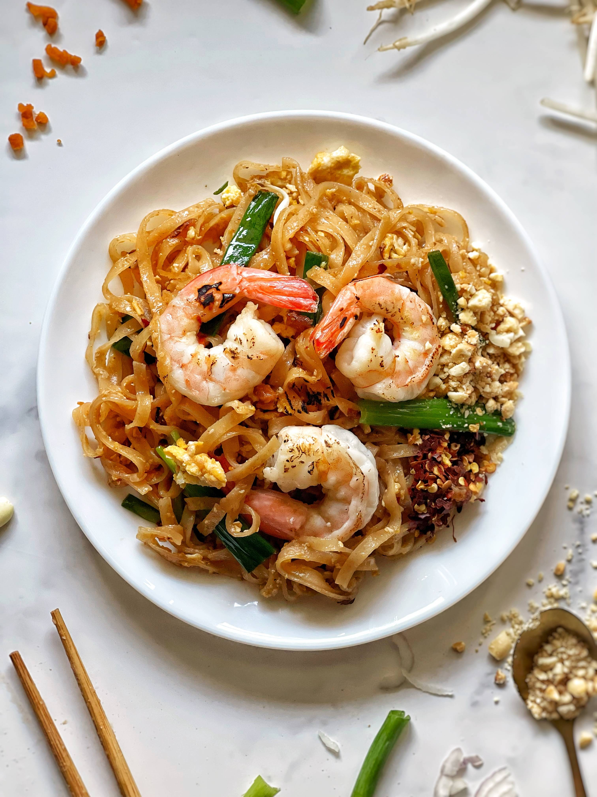

Pad Thai

Ingredients
- 1 package rice noodles
- 2 tablespoons butter
- 1 pound boneless, skinless chicken breast halves, cut into bite-sized pieces
- 1/4 cup vegetable oil
- 4 eggs
- 3 tablespoons white sugar
- 2 tablespoons fish sauce
- 1 tablespoon white wine vinegar
- 1/8 tablespoon crushed red pepper
- 2 cup bean sprouts
- 3 green onions, chopped
- 1/4 cup crushed peanuts
- 1 lemon, cut into wedges
Steps
- Gather all Ingredients
- Soak rice noodles in cold water until soft (30 to 50 minutes). Drain and set aside.
- Meanwhile, heat butter in a wok; add chicken and sauté until browned. Remove chicken and set aside.
- Heat oil in the wok over medium-high heat. Crack eggs into hot oil and cook until firm.
- Stir in chicken and cook for 5 minutes.
- Add softened noodles, sugar, fish sauce, vinegar and red pepper; mix well until noodles are tender.
Adjust seasonings to taste.
- Stir bean sprouts into wok and cook for 3 minutes.
- Serve topped with green onions, crushed peanuts, and a wedge of lemon.